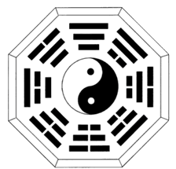
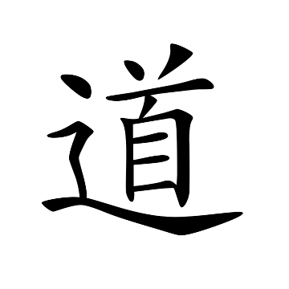

Yinyang and Dao
Yi Jing (I Ching)
Yi Jing, the Book of Change, was compiled in the early period of the Zhou dynasty (1123–221 b.c.e.) and was interpreted and commented by Kongzi (Confucius, 551–479 b.c.e.). It has greatly influenced the Chinese worldview and thus is a very important book in Chinese philosophy and religions.
Two important notions in Yi Jing are taiji and yinyang. They constitute the fundamental conceptual framework that shapes the Chinese worldview.
Taiji (Taichi)
Taiji is the primordial reality in which no differentiation has occurred. We can visualize it as an endless three dimensional void. As such, it is both something and nothing. It can be conceptualized as undifferentiated space or universe. It is the origin from which everything becomes what it is, and relative to which everything is what it is. In addition to its original meaning, taiji is sometimes understood as the unity and oneness of reality.
Yinyang
Yin and yang originate from taiji. In Yi Zhuan, it is stated, “Taiji yields two yi (two dimensions or ultimate measures).”1 When differentiation starts, contrasts will emerge as yin and yang. Yin and yang are these two dimensions. Yin is symbolized using the sign “⚋” and yang with “⚊”. (They can be symbolized with Hindu numerals as 0 and 1.) As a binary pair, yin and yang mutually yield and define each other, and thus one is meaningless without the other. Yin means “that which is not yang” and yang means “that which is not yin.” (That is, zero is non-one and one is non-zero.) In this way yin and yang can be used to represent the contrasts that show different characteristics of reality, or different states of being. After the first differentiation, there would be exactly two states of reality: one of them yin and the other yang. If both states are further differentiated, then there would be four states: yin-yin ⚏ (00), yin-yang ⚍ (01) yang-yin ⚎ (10) and yang-yang ⚌ (11). If each of these four states differentiates further, there would be eight states: ☷ (000), ☳ (001), ☵ (010), ☱ (011), ☶ (100), ☲ (101), ☴ (110), and ☰ (111). Here we have the eight trigrams. With three additional differentiations, we would have sixty-four hexagrams such as ䷊ and ䷌. This process can continue indefinitely.

Figure 1 The Yinyang bagua Diagram
The Chinese people recognize the contrasts in the cosmos as yin
and yang. For instance, day, warmness, the sun and the male
are categorized as yang whereas night, coldness, the moon and
the female are labeled as yin. It is important to notice that
the attribution of yin or yang does not mean to imply
that one is better than the other. Yin and yang are
just a binary pair used to represent the contrasts that show
different characteristics in the world.
Reality and changes are then comprehended and interpreted in terms of yin and yang. Once there is a contrast of yinyang, change becomes possible. After the first differentiation, reality is distinguished into yin (0) and yang (1). A shift from yin to yang, or from yang to yin would be a change. Given more differentiations, there would be more states. A change would in general be a shift from a given state to a different state. For instance, four seasons can be designated as follows: spring (01), summer (11), autumn (10) and winter (00). The change of season from spring to summer can be represented as a change from yin-yang (01) to yang-yang (11). Such a change is characterized as the rise or strengthening of yang and the corresponding decline or weakening of yin. Since yang is also associated with warmness, the rise of yang fits well with the observation that it gets warmer from spring to summer. This approach can be generalized to explain all changes as the rise and decline of yin and yang.
Yinyang and Harmony
The idea of yinyang leads the Chinese people to adopt a dynamic worldview that centers on harmony. Changes are accepted as the norm of reality. The harmony achieved by the dynamic balance of yin and yang is viewed as good, and the dynamic unbalance of yin and yang as bad. As a binary, yin and yang are mutually dependent of each other. A long-term dominance of one over the other would upset the balance and stifle change. For instance, a long-term dominance of warmness and dryness in weather would constitute a drought. The focus of the Chinese worldview is to understand how changes occur and evolve so as to promote and maintain dynamic balance of yin and yang. This is why dao is so important in the Chinese worldview.
Dao (Tao)

Figure 2 The Chinese character dao
Dao literally means
“the road” or “the path.” Being in one place now and later on
in a different place is a very basic kind of change in every day
life.2
To go from one place to another one would have to go along a certain
route.3
The term “dao” is then generalized to mean the way of
change. Since changes are explicated in terms of yin and yang,
dao is thus the principle that characterizes the rise and
decline of yin and yang. The basic idea in the Chinese
worldview is to understand dao so that one can be in a good
position to understand and conduct changes. The likelihood of
achieving and maintaining long term dynamic balance between yin
and yang can be increased by choosing right courses of action.
In doing so, harmony can be sustained not only in human society but
also between humans and nature.
Properly understood, we can see why the notion dao is so central to the Chinese worldview. Dao simply means the way of change. Regrettably this basic meaning sometimes got lost in various interpretations that mystify dao and dress dao in baffling cloaks. Some even turn dao into a supernatural force that influences or controls people’s fate. The prevalence of divination and fortune-telling in the Chinese culture is rather unfortunate. It is a symptom resulting from a lack of in-depth understanding of the Chinese worldview. The teaching of Yi Jing, instead of being properly understood to promote harmony, has been turned into a system of divination for personal ascendancy and fortune.
Understanding the connection between dao and harmony, and their places in the Chinese worldview put us in a better position to understand Confucianism and Daoism. Both schools of philosophy aim to know dao so as to comprehend changes and promote harmony. But they differ on how dao can be known and how harmony can be achieved and sustained.
The Characteristics of the Chinese Worldview
Grounded on the framework of yin and yang, the Chinese worldview seeks to achieve and maintain harmony by means of knowing dao. As a result, it has five characteristics that make it stand out as a major worldview.
First of all, the main focus of the Chinese worldview is harmony. Harmony is regarded as good while disharmony, bad. Notice that the contrast is between good and bad, not good and evil. This distinction is important. Even though disharmony is viewed as bad, it is understood and accepted as something that is a matter of course and would occur from time to time. So the goal is to minimize or shorten disharmony, not to eliminate it. This is different from some worldviews that center on good and evil, and seek to eliminate evil. Also, unlike many other traditions, the Chinese worldview does not postulate some supernatural beings or higher power to represent good or evil.4
Secondly, changes in reality and in life are accepted as a matter of course; they are not regarded as bad or undesirable. Reality is perceived as dynamic, and not static. This provides a philosophical foundation for a progressive outlook. Instead of trying to keep the status quo, one would work to guide changes in ways that are conducive to harmony.
Thirdly, virtues and vices are understood in terms of the dynamic balance or unbalance between yin and yang.5 The dominance of one over the other for a prolonged period of time, or on too many occasions, would be bad. For instance, it would be impetuous for a person to rush to act most of the time. On the other hand, it is also undesirable to be overly cautious and indecisive. An ideal person would be prudent, but capable of acting quickly when necessary.
The fourth characteristic of the Chinese worldview is its emphasis on harmony and cooperation, not conflict and competition. It embraces the way of harmony and rejects the way of domination. Applied to gender issues, this means that the talk of the war between men and women would be found distasteful in the Chinese worldview. The long-term domination of men over women, or women over men, would be bad. Instead, the harmony in a household is to be achieved by the mutual respect and cooperation between the couple.6
The last but distinctive feature of the Chinese worldview is its focus on living a good life in the present life. The concern is not on the other world and afterlife such as Heaven or rebirth. It does not assume that there is an afterlife and regard the present life as somehow secondary to the next life. Rather, it accepts that this life is finite and encourages the outlook of living the present life to the fullest.
Understanding yinyang and dao helps us gain an overall picture of the Chinese worldview with its goal of achieving harmony within human society and between humans and nature. Such an understanding also gives us a head start in learning about Confucianism and Daoism. Both of them subscribe to this worldview; they differ only in how such an ideal should be implemented.
-
Xici, Volume 1, Chapter 11 (繫辭上篇第十一章). ↩
-
Places often serve as metaphors for states of reality, states of being, moods and so on. Some noticeable examples are Shangri-La, Camelot and Zion, just to name a few. ↩
-
There may be more than one path to go from one place to another. Route A may be the fastest while Route B the most scenic. If one travels for sightseeing, then Route B would be the more suitable course to take. ↩
-
The contrast and the mutual dependency between yin and yang are sometimes misappropriated as a response to the problem of evil. “Evil exists and cannot be eliminated because good cannot exist without evil, just like yin cannot be without yang.” But such a view is a misapplication of yinyang and also goes against the traditional teachings of Judaism and Christianity. If good cannot exist without evil, then God cannot exist without the Devil. ↩
-
This framework of yinyang balance is also adopted in many other domains such as health and medicine. For instance, to be healthy mentally and physically, a person would seek to maintain the dynamic balance of yin and yang. ↩
-
What then accounts for China being a male-dominant society for thousands of years? The causes lie more on China being an agrarian country and its needs to defend itself against nomadic tribes than on philosophical or religious grounds. It is telling that the Chinese character for man or the male, nan (男), literally means “manpower or labor in the crop field.” ↩
Wu Wei-Ming (吳維明)
Philosophy and Religious Studies
Butte College

The Way of Ren by Wu Wei-Ming is licensed under a Creative Commons Attribution-NonCommercial-NoDerivatives 4.0 International License.